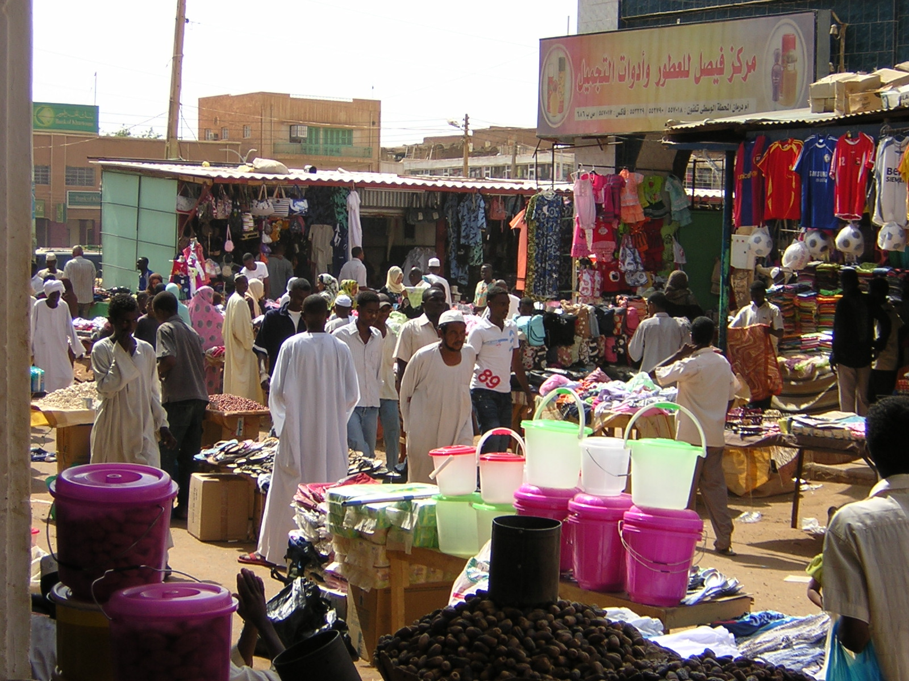

DRAFT FOR OWNER REVIEW — NOT APPROVED FOR PUBLICATION
Initial manuscript; research and image checks remain. مسودة أولى؛ البحث وفحص الصور لم يكتملَا.

The important moment in a payment is not the moment an application opens. It is the moment a person can use the money. A transfer that appears on one screen but cannot pay a supplier, buy medicine or be withdrawn when needed has not completed its purpose.
Imagine a shopkeeper waiting for confirmation while a customer insists that the money has left their account. This is an illustrative situation, not a reported interview. The problem cannot be solved simply by telling both people to become more comfortable with technology. They need an intelligible transaction record and someone with the authority to resolve the discrepancy.
Sudan’s digital-payment debate should begin there: with successful use, and with what happens when use fails. More accounts and downloads can be useful, but neither alone measures whether people have gained control over their money.
UNDP’s November 2026 financial-literacy assessment draws on 152 consumer interviews in River Nile, Kassala and Gedarif, alongside provider consultations. It identifies practical learning needs and constraints on safe use. Its small, non-random sample is not a national estimate, and it does not establish that a training programme has improved outcomes. Its value lies in identifying problems worth testing and addressing.[1]
The distinction between access and capability matters. Someone may have occasional access to a smartphone while depending on another person to read a message or complete a transaction. Assistance can make a service usable. It can also create a loss of privacy or control if the account holder cannot independently understand what happened.
The response should not be to shame people for seeking help. A service should be designed around the ways people actually use it. Clear language, readable confirmations, accessible complaint channels and meaningful choices about assistance belong in the product, not just in a training booklet.
A payment moves through more than a handset. Communications, power, the provider’s systems, settlement arrangements and sometimes an agent’s available cash all matter. A reliable interface cannot by itself compensate for a broken chain behind it.
The World Bank’s 2021 Sudan reform document already identified weak financial infrastructure and inclusion as constraints on delivering social support. It is a historical baseline, not a description of current account ownership.[2] Reading that earlier concern beside the newer UNDP study suggests a question: how much of the burden has continued to fall on the user when the obstacle belongs to the service?
If a failed transaction requires repeated journeys, paid calls and several days without access to money, the nominal transfer fee understates its cost. This article does not estimate that cost nationally. It argues that providers and regulators should measure it. The time needed to reverse an unsuccessful payment can matter as much as the time needed to send a successful one.
A useful learning session would begin with a task: identify the recipient, understand the total charge, check the amount, recognize the status and find the receipt. Then it would deliberately address failure. What does a pending transaction mean? How can the user make a complaint without giving away confidential credentials? What record identifies the disputed payment?
These are proposed design tests, not universal instructions for a particular bank’s application. Procedures differ, and current official guidance must determine the steps for each service. Training materials should be tested with the people expected to use them, including those who read with difficulty or use shared devices.
A provider should not treat attendance at a workshop as evidence that customers can now navigate its system. Practical comprehension needs observation. Equally, a user should not be blamed for a confusing interface that staff themselves struggle to explain. The UNDP assessment offers a basis for such practical work; it does not remove the need to evaluate what is actually delivered.[1]
Digital payments and cash need not be rival identities. People may want to receive remotely and spend locally in cash, or accept electronic payment while paying some suppliers physically. A useful system should make those transitions predictable and affordable.
Agent availability is therefore more than a map of outlets. An outlet that cannot complete a transaction at the relevant time is not equivalent to one that can. Service monitoring should distinguish advertised access from usable access. Where cash-out is involved, its terms should be visible before the user commits to a transfer.
Nor should a public payment programme assume that an application is the only acceptable route to essential support. Alternatives and assisted channels need to be considered for people excluded by connectivity, disability, documentation or device access. Their design requires care, but abandoning them can turn a technical convenience into a barrier to entitlement.
Kandaka proposes a small public service scorecard: clearly defined success rates, time to resolve failed transactions, complaint outcomes, disclosed charges and service availability. Figures should distinguish service types and locations, with privacy preserved. A national average can hide an unusable service in one locality.
Account growth belongs alongside those measures, not above them. So does an honest account of exclusions. Regulators would need to define reporting rules that make providers comparable; independently checking the figures matters more than producing an attractive dashboard.
Our currency article asks how Sudan can rebuild trust in the pound. This is a different layer of trust: whether a payment instruction produces a usable result and whether a person has recourse when it does not.[3] People should not have to understand the whole banking system to know where their money went. They need a service that can answer—and put things right.
The World Bank’s FY2026 STARS annual report supplies a further institutional perspective. It summarizes a payments assessment whose final draft went to the Central Bank in June 2026 for validation. The summary describes prewar infrastructure, interoperability gaps and subsequent disruption. We have reviewed that summary, not the underlying assessment, and it does not establish which services work in every locality today.[4]
References
[1] UNDP, Digital Financial Literacy in Sudan, November 2026, selected executive-summary, methodology and results passages reviewed: https://www.undp.org/sites/g/files/zskgke326/files/2026-11/dfl.pdf
[2] World Bank, Sudan Reengagement and Reform Development Policy Financing, 2021: https://documents1.worldbank.org/curated/en/251051616767309548/pdf/Sudan-Reengagement-and-Reform-Development-Policy-Financing-Project.pdf
[3] Kandaka, Rebuilding Trust in the Pound: https://kandaka.com/development/rebuild-trust-sudanese-pound/
[4] World Bank / البنك الدولي، STARS Annual Report FY2026, pp. 18–19: https://documents1.worldbank.org/curated/en/099346011052631617/pdf/IDU-014db926-ab10-4468-928f-82179522ff2e.pdf
REVIEW NOTE: current provider complaint terms and operational claims still require checking; the underlying payments assessment has not been reviewed.